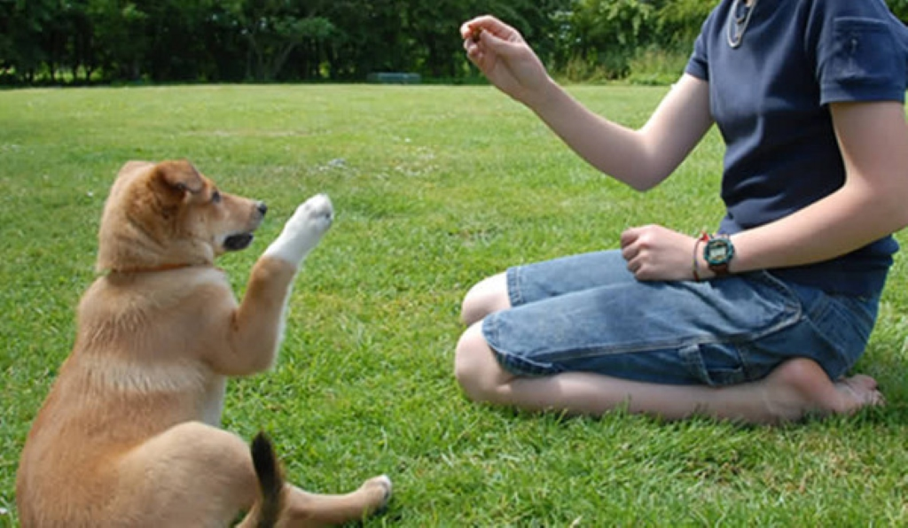

關於我們
流浪動物之家的使命是提供一個溫暖、安全且充滿愛心的環境，為無家可歸的動物提供食物、醫療照顧和愛的呵護。
訓練的過程
當我們訓練動物時，安全和愛心是兩個不可或缺的要素。透過這樣的訓練，我們能夠建立起一種互相信任和尊重的關係，讓我們的動物朋友們感受到我們的愛與關懷。
在訓練過程中，我們要對動物們展現溫暖和關懷，以建立起互相的信任。給予動物們鼓勵和獎勵，讓牠們理解我們並樂於與我們合作。同時，我們也要學會聆聽動物的需求和感受，尊重牠們的個性和節奏，以確保訓練過程中不會對牠們造成過度的壓力或不適。
每個人都該有的品質
- 溫暖
- 安全
- 愛心
在這個世界上，安全、愛心和動物之間有著深刻的聯繫。安全是一種我們應該珍視和追求的價值，無論是對自己還是對他人來說。而愛心則是我們內在最美好的品質，它使我們能夠關注和照顧身邊的生命。當談到動物時，安全和愛心變得更加重要，因為牠們無法像人類一樣表達自己的需求和情感。